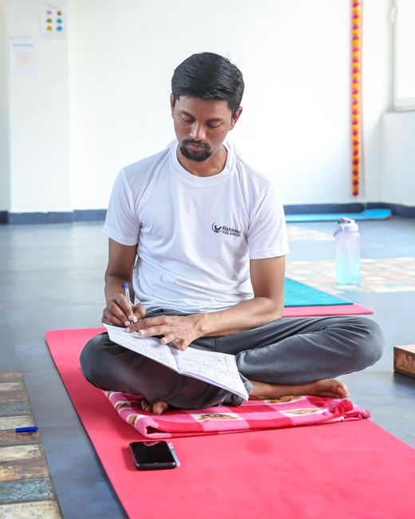

I have kept some kind of morning ritual for close to two decades now, and it has done more for my thinking, my mood, and how I move through the rest of the day than anything else I have tried.
My thinking is more precise now. I feel more grounded in my body, more intentional with my time, more peaceful in my heart, and more accepting of myself and the people around me. Put simply, I feel wiser, more content, and more able to love the life I already have.
You may be wondering how a handful of daily habits could possibly do all that.
I have tried almost anything for personal growth over the years, and while not everything has worked, this has. It is easy to fold into an ordinary life, and the benefits show up in the body, the emotions, and somewhere quieter than either of those.
It is easy to feel like you are on a hamster wheel, taking care of everyone else's needs and forgetting your own until you cannot remember what your own wants and needs even are. Life can start to feel meaningless.
A morning ritual, the way I practice it, is what happens in the quiet stretch after you wake up and before the day actually starts making demands of you.
It is more about being than doing, more about the reward inside you than any reward on the outside. After all, you are a human being, not a human doing.
The Difference Between a Routine and a Ritual
Habit versus joy
I used to call this my morning routine, and for a long time that word was accurate. A routine is something you do out of habit, whether or not you actually enjoy it. A ritual is different. It is something you do on purpose, something you look forward to and savor, not just something that happens because it always happens.
I have plenty of routines that exist purely to keep my life simple. I do not necessarily lean into them or enjoy them. My mornings are not like that anymore. Somewhere along the way they turned from a routine I kept out of discipline into a ritual I actually wake up wanting.
The hour that sets the tone
What you do first thing in the morning affects your whole day. What you do every day affects your whole life. I did not come up with that line, but I have tested it enough times to know it holds up.
Some mornings I think of this first hour as a kind of power hour. I know I have roughly sixty minutes before the rest of my life starts pulling at me, and putting a handful of small tasks inside that window means they actually get done instead of drifting into the rest of the day as vague intentions.
The point is not to squeeze in as much as possible. It is to protect one hour that belongs only to you before you belong to anyone else.
What My Own Mornings Actually Look Like
Before I even open my eyes
Most of the work happens the night before. I lay out my clothes, so I am not standing in front of a closet making decisions at six in the morning. I write down the next day's most important task, so I can start on it without having to decide what matters first. I set my alarm for a time that actually gives me room to move slowly instead of feeling rushed and frantic.
Five minutes of preparation the night before buys an hour of ease in the morning. It is not about making the morning longer. It is about making it easier.
Not every priority is the same every morning. Some days call for something physical, water and movement before anything else. Other days call for something more emotional, five slow minutes with a journal before I let myself think about anything else. Choosing which one comes first is often the whole decision.
The first hour, in order
I only set one alarm now. For years I was the kind of person who set five alarms in a row, and it turns out that just trains you to sleep worse and trust the first one less. One alarm, no backup coming, means I actually get up when it goes off.
The moment my feet hit the floor I open the blinds and make the bed. It sounds small, but a made bed is a surprisingly effective obstacle between me and crawling back under the covers.
Then I wash my face and drink a full glass of water, slowly, waiting for the little bubbles in the glass to settle before I drink it. My body and mind feel more awake within minutes. If you feel groggy most mornings, try a glass of water before you reach for the coffee.
After that I move. Some mornings that is a proper workout, other mornings it is closer to a short one, but the point is the same either way, to get my heart pumping and finish waking myself up rather than saving all of that for later in the day.
Once I am sitting down, I write three things I am grateful for, three things that would make the day great, and two words for who I am choosing to be that day. Some mornings I add a line about a difficult emotion I am carrying, because naming it on paper does more for me than carrying it around unnamed all day.
I read a small amount, usually somewhere around ten pages, while lying on my back with my legs up the wall and my hips supported. It sounds like an odd position to read in, but it calms the mind and helps the blood move properly through the legs after a night of lying still.
Then I sit and meditate. I started with a single minute a day, because if I had tried for more I would have gotten frustrated and quit before it ever became a habit. These days it is closer to thirty minutes, split between sitting still and walking slowly, mostly practicing the kind of insight meditation I first learned years ago. It is meant to build insight that eases the mind from craving, aversion, and confusion, and even after all this time I still feel like a beginner some days. I know it is working anyway, even on the mornings it does not feel like it.
I get dressed before I do anything else that requires being seen, because staying in pajamas even on a slow day tends to drain the whole day of its momentum. Then, finally, breakfast, the best part of the whole hour and the one I never have to talk myself into.
The right spot, and what I keep in it
None of this works without a place to do it. Even in a hotel room I will make a small spot for myself, somewhere with a comfortable place to sit, a blanket, enough light, and as few distractions as I can manage. I keep what I need within reach so the morning never stalls out because I am hunting for a pen.

- A journal and a pencil
- Something to read that I actually enjoy
- A mug for tea or coffee
- A soft blanket, and in winter, a pair of warm socks
- My dog, curled up nearby
The materials matter less than the fact that they are already there. Decision fatigue is real, and by the time morning arrives your brain is already juggling more than enough without also hunting for a notebook.
The trick that finally made vitamins stick
One habit I could never remember on its own was taking my vitamins. I finally started keeping them in the same drawer as the protein powder I use every morning, since I was already reliably opening that drawer. Now I take them without ever having to think about it. Attaching a new habit to one that is already solid is a small trick, but it has worked every single time I have tried it since.
I also switched my habit tracker from monthly to weekly. My goals rarely survive a full thirty days intact, and watching a whole month slip away mid stretch felt discouraging in a way that undid the point of tracking in the first place. Resetting every Monday feels like a clean start instead of a failure.
What Years of This Have Actually Taught Me
Perfection was never the point
Most new habits fail because of an all or nothing approach that leaves no room for experimenting or getting it wrong. Trying to do everything the right way from day one sets you up for exhaustion and quitting before you have given yourself a real chance.
I did not build this hour all at once. I added one piece, kept it for a while, and only then added another. If you are starting from nothing, resist the urge to copy someone else's whole morning on day one. Choose one or two things, and be proud of yourself simply for doing them.
Some mornings I still catch myself sliding toward doing everything the right way instead of the way that actually serves me, and I have to ask myself a plain question. Does this serve what I actually need, or does it serve my own perfectionism? Usually the honest answer tells me exactly what to drop.
Ninety percent of it is just showing up
Ninety percent of a morning ritual's success, or honestly of anything, is repeatedly showing up and doing something. Doing anything, however small, matters more than what you do, how you do it, or how long you do it each time.
Growth here looks like effort multiplied by time, not effort multiplied by intensity. Over each small daily promise kept to myself, I have built something closer to trust in my own reliability, which is worth more to me now than any single morning done perfectly.
If today slips, tomorrow is not a restart of your whole life. It is one more morning you get to do on purpose. One journal page. One short walk. One promise kept. Never miss twice, and the whole thing stays intact.
The Questions I Get Asked Most
What if I am not a morning person?
No. Night owls get treated as lazy in a culture that puts mornings and productivity on a pedestal, and it is not fair or accurate. Night owls are just as capable, on a different schedule. Choose whatever time actually works for your own nature, whether that is an afternoon ritual, an evening one, or something in the middle of the night. That said, plenty of people, myself included, find that starting the day grounded does set a different tone for everything that follows.
What happens when life gets in the way?
It will. The perfect morning does not exist, and chasing it is a losing game. What matters more is protecting what actually counts and getting back to it quickly instead of treating one missed morning as proof the whole thing failed.
- The people you live with are not the reason your mornings fall apart. Communicate what you are building instead of quietly resenting them for existing.
- Pets can be folded into the ritual rather than fought against. Feed them, walk them, let them curl up nearby while you read.
- Saying no protects the morning. Every yes to something else is often a quiet no to yourself.
- Sleep is not optional. Seven to nine hours of actual sleep is what makes any of the rest of this possible.
- An irregular schedule does not disqualify you. Call it a pre work ritual instead of a morning one if that fits your hours better, and take ownership of whatever window you actually have.
Doesn't spending this much time on myself feel selfish?
It is not selfish, it is self loving. Meeting your own needs is not a luxury, it is what allows you to show up steady for everyone else who depends on you. When I am at ease, the people around me tend to be more at ease too. Even the dog seems to notice.
Every ritual here is different because every person practicing one is different. There are no fixed rules. Borrow what speaks to you, leave the rest, and stop comparing your morning to anyone else's, including mine. You are on your own path, and so is everyone else.